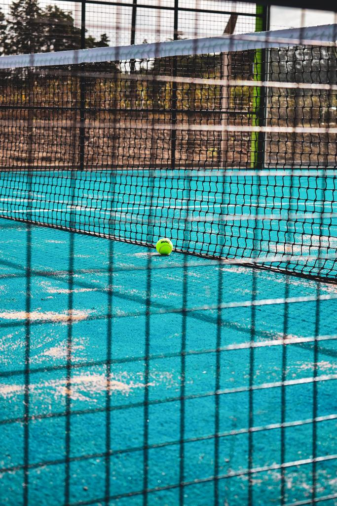

CONTACTO
PRODUCTOS
TURNOS
Green Padel

El pádel es un deporte de raqueta que se juega en una pista específica para este deporte. Es similar al tenis, pero con algunas diferencias en las reglas y en el equipamiento utilizado. En el pádel, se juega en parejas (dobles), aunque también existe la modalidad de individual. Se utiliza una pala o raqueta sólida y perforada, generalmente de fibra de vidrio o carbono, y una pelota similar a la del tenis, pero de menor presión. La pista de pádel tiene unas dimensiones más pequeñas que una cancha de tenis y está rodeada por paredes de cristal o metacrilato, lo que permite que la pelota pueda rebotar en ellas. La superficie de la pista suele ser de césped artificial, hormigón o materiales sintéticos. El objetivo del juego es golpear la pelota con la pala para pasarla por encima de la red y hacer que rebote en el campo contrario sin que el oponente pueda devolverla correctamente. El juego se basa en la estrategia, la técnica y el trabajo en equipo. El pádel ha ganado popularidad en muchos países en las últimas décadas debido a su fácil aprendizaje y la diversión que ofrece. Es un deporte accesible para personas de diferentes edades y niveles de habilidad. Es importante destacar que la Argentina forma parte de uno de los paises mas destacados en el deporte con grandes jugadores en el WPT.